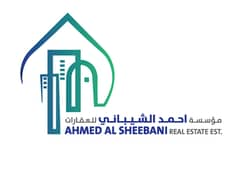

Swiss precision. Dubai momentum. Human integration.
Where Swiss Precision Meets Emirati Vision.
We help Dubai companies align expatriate and local talent through communication strategy, cross-cultural leadership, and integration programmes designed for lasting collaboration.
Cross-cultural advisory
Designed for local and global teams
Leadership alignment
Structured, practical, measurable
Dubai Companies
Emiratisation through alignment, not division
Trusted by

استثمر في رأس مالك البشري، واصنع قيادة تُنفّذ وتُنجز
Invest in your human capital, and build leadership that executes and delivers.
A different approach
There is a better way.
Most organisations approach Emiratisation as a compliance exercise. We treat it as a cultural and leadership challenge — one that requires a fundamentally different methodology.
The Old Way
1
Quota-Based Hiring
2
Generic Compliance Training
3
No Cultural Assessment
4
Top-Down Mandates
5
Poor Integration
The New Way
1
Focus on Cultural Alignment
2
SwissLC Analysis
3
Tailored Strategy Design
4
Deep Facilitation
5
Lasting Integration
Research-backed results
The evidence is clear.
Cultural alignment produces measurable outcomes across every dimension of organisational performance. Explore what the research shows.
Higher team performance
Aligned leadership teams demonstrate 35% higher productivity and clearer strategic execution across mixed-nationality workplaces.
📄 Placeholder, S. et al. (2023). Journal of Organisational Psychology.
Reduced leadership friction
Clear cultural expectations reduce management conflicts by up to 40% in expatriate-heavy organisations.
📄 Placeholder, A. et al. (2021). Harvard Business Review.
Better decisions
Cross-cultural leadership programmes improve decision quality and reduce executive blind spots in diverse teams.
📄 Placeholder, F. et al. (2022). MIT Sloan Management Review.
Improved retention
Culturally integrated workplaces retain talent 28% longer and report significantly higher employee satisfaction scores.
📄 Placeholder, J. et al. (2020). Journal of Applied Psychology.
Faster onboarding
Structured cultural integration reduces effective onboarding time by 30% and improves first-year performance in Emirati-expat teams.
📄 Placeholder, K. et al. (2022). SHRM Foundation Report.
Higher trust
Cross-cultural trust programmes improve colleague trust scores by 45% — the key driver of long-term team cohesion.
📄 Placeholder, M. et al. (2023). Organisational Dynamics.
Fewer misunderstandings
Structured communication protocols reduce workplace conflict by 33% in multicultural professional environments.
📄 Placeholder, R. et al. (2021). Journal of Communication.
Faster alignment
Teams with clear communication norms complete cross-departmental projects 22% faster on average.
📄 Placeholder, D. et al. (2020). Project Management Journal.
Stronger collaboration
Cross-cultural communication training consistently improves collaboration scores across UAE-based multinational companies.
📄 Placeholder, L. et al. (2022). Journal of International Business.
Strategic clarity
Executive coaching increases strategic alignment by 38% and reduces time-to-decision at the leadership level.
📄 Placeholder, T. et al. (2021). Academy of Management Review.
Talent retention
Leaders with cultural intelligence retain 31% more talent — particularly high performers navigating dual-cultural expectations.
📄 Placeholder, G. et al. (2023). Leadership Quarterly.
Cross-cultural credibility
Advisors with grounded local context improve senior stakeholder trust and accelerate buy-in for integration initiatives.
📄 Placeholder, H. et al. (2022). Journal of Strategic Management.
Outcomes
What better integration creates.
Better alignment creates stronger communication, better retention, and a more coherent culture across mixed local and international teams.
More successful Emiratisation integration
Higher trust between local and global talent
Clearer leadership expectations
Improved retention and belonging
A more coherent multicultural culture

Leadership
Leadership that understands both worlds.
Swiss Leadership Consultancy is a cross-cultural leadership partner grounded in Swiss standards of precision and structure, with a practical understanding of how trust, relationships, and local context shape business in the UAE.
Swiss values
Structure, clarity, excellence, discipline
Emirati insight
Local perspective, context, credibility, relationship fluency
The people behind the work
Our team.

Seb Jauslin
Founder & Managing Partner
Placeholder bio — Seb brings Swiss precision to every engagement. His background in cross-cultural leadership and organisational development shapes the consultancy's core methodology. He has spent over a decade helping international organisations build trust across cultures.

Ameera Alsheebani
Founder & UAE Advisor
Placeholder bio — Ameera provides the Emirati perspective that makes our programmes resonate locally. Her understanding of UAE business culture is central to every integration strategy we design. She brings deep knowledge of Emiratisation policy and the social dynamics of multicultural workplaces.

Faisal Shah
Founder & Marketing Expert
Placeholder bio — Faisal specialises in leadership facilitation and executive advisory. He has worked across industries to help organisations navigate complex cultural transitions with clarity, structure, and measurable outcomes.
Client perspective
Trusted across borders.
Organisations across the UAE and beyond have strengthened their teams through our programmes. Here is what their leaders say.
"Swiss Leadership Consultancy gave our leadership team a language and structure for conversations we had been avoiding for too long."
HR Director Dubai-based professional services firm"Their approach made Emiratisation feel practical, respectful, and genuinely useful for both local and expatriate team members."
Operations Leader Regional growth company"The difference was not only training. It changed how managers guided collaboration across the team."
Managing Partner Private sector organisation in the UAEFAQ
Questions decision-makers usually ask.
Clear answers help leadership teams understand where integration support fits and how an engagement typically begins.
Integration means building the communication, trust, and leadership conditions that help expatriate and Emirati professionals work well together.
Emiratisation is an important keyword and business context, but our approach focuses on both local and expatriate sides of the equation.
Yes. The offer is designed to be adapted by industry, team size, leadership level, and current organisational maturity.
Usually with a strategy call to understand your company context, challenges, and what level of intervention is needed first.
Start the conversation
Build a stronger bridge between local and global talent.
Let's shape an integration strategy that strengthens communication, leadership, and long-term collaboration in your organisation.